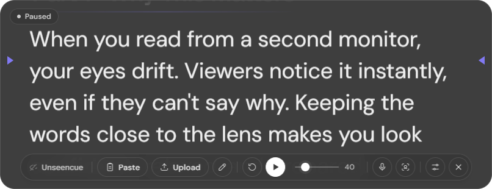
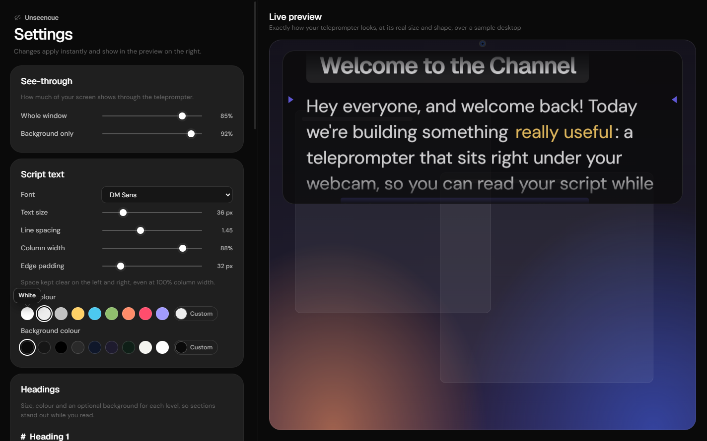
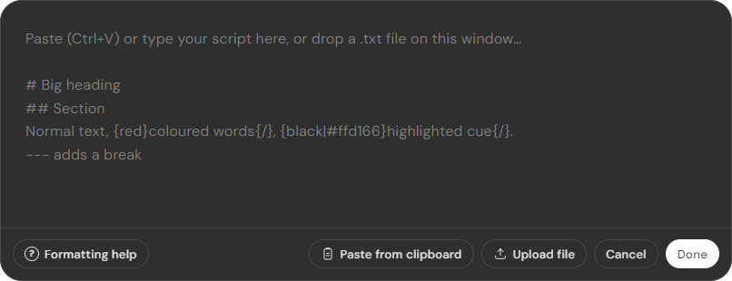

Hidden from capture
Windows leaves it out of every recording and screen share. You see it; your audience doesn't.
Unseencue sits right under your webcam, so you read your script while looking straight into the lens. It stays invisible in screen recordings, Zoom, Google Meet, Teams and OBS.

Your script sits a finger's width below the lens. Your eyes never leave the camera.
Built for creators, presenters and anyone who records or shares their screen.
Windows leaves it out of every recording and screen share. You see it; your audience doesn't.
Top-left, centre or right, or save the exact spot. It opens there every time.
Scrolls while you talk and pauses when you stop. It adapts to your room's noise automatically.
Look away and it waits; look back and it carries on. Face tracking runs on your PC.
Paste your script, type it in, open a .txt or .md file, or drop one on the window.
Any installed font, size, spacing, colours, heading styles, reading marker and see-through level, with a live preview.
Run Unseencue.exe. It's portable, so there's nothing to install. It appears at the top-centre of your screen, under the webcam.
Click Paste or Upload, type in the editor, or drag a file onto the window. Use headings and colours to mark sections and cues.
A countdown runs, then the script scrolls at your speed. Or let voice follow pace it for you.
Start OBS, Zoom, Meet or Teams as usual. Your script stays on your screen and out of the shot.


# HeadingBig heading for each part of your video{red}word{/}Colour a word you want to punch{black|#ffd166}CUE{/}Highlight a cue you mustn't miss> CUE: smile hereA stage note in a small box, not a line to read---A break where you pauseFree, private and portable. Everything runs on your PC. No account, no tracking.
The app isn't code-signed yet, so Windows SmartScreen may show "Windows protected your PC". Click More info, then Run anyway.
No. When you share your screen, they see whatever is behind the teleprompter. Your webcam video never shows your screen either.
No, whether you capture the whole display or a single window. Use Settings → Check it's hidden now to see what a recorder captures.
No. It only measures loudness, locally, to decide whether you're talking. Nothing is recorded, stored or sent anywhere.
Windows usually gives a webcam to one app at a time. Choose a virtual camera in Settings → Head follow → Camera. In OBS, click Start Virtual Camera and pick "OBS Virtual Camera". Voice follow and manual scrolling keep working either way.
Not yet. Hiding from capture relies on a Windows feature.
Never. Uploaded files are only read. Edits become an in-app copy.